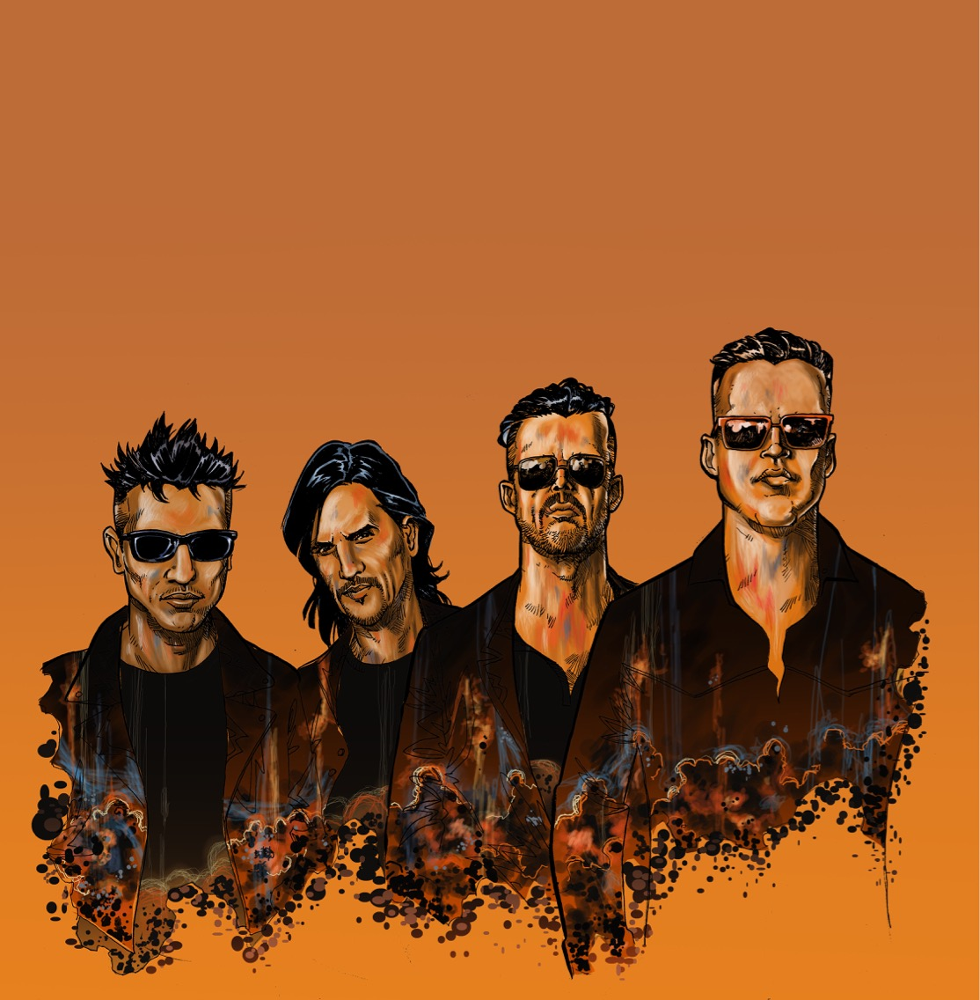

Funcircus: Banda de Rock formada en 2011 en la ciudad de Córdoba, Argentina. Con influencias provenientes del blues, el rockabilly y el rock 'n roll americano, la banda tiene un sonido definido y potente, producto de la fusion de estos estilos con riff rockeros dandole contundencia y personalidad.